Selected practice · 16 new artworks
Illustration
Characters with presence. Stories with warmth.
A selection of commissioned, personal and narrative drawings that move between observation, graphic shape and visual storytelling.
01 · Long-distance relationship series
Distance becomes a shared room.
Each portrait brings two lives into one detailed scene. Drag across every artwork to move between the structural sketch and the final color illustration.
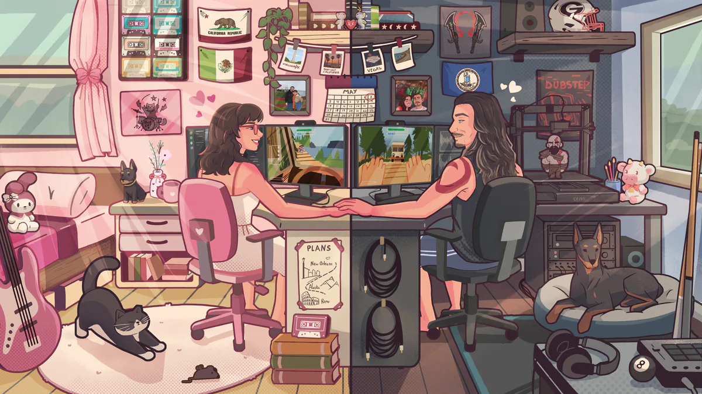
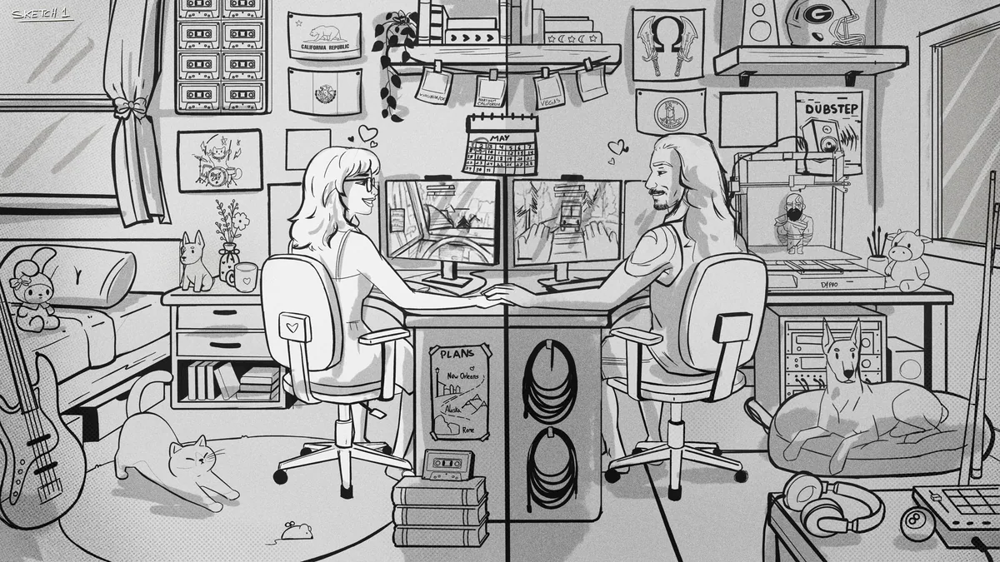
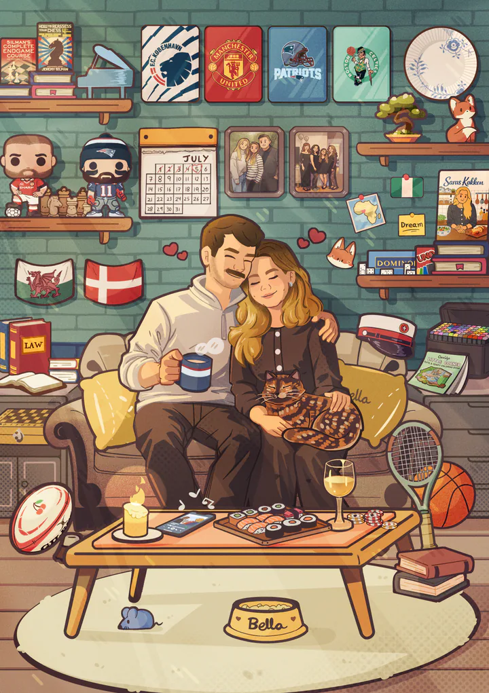
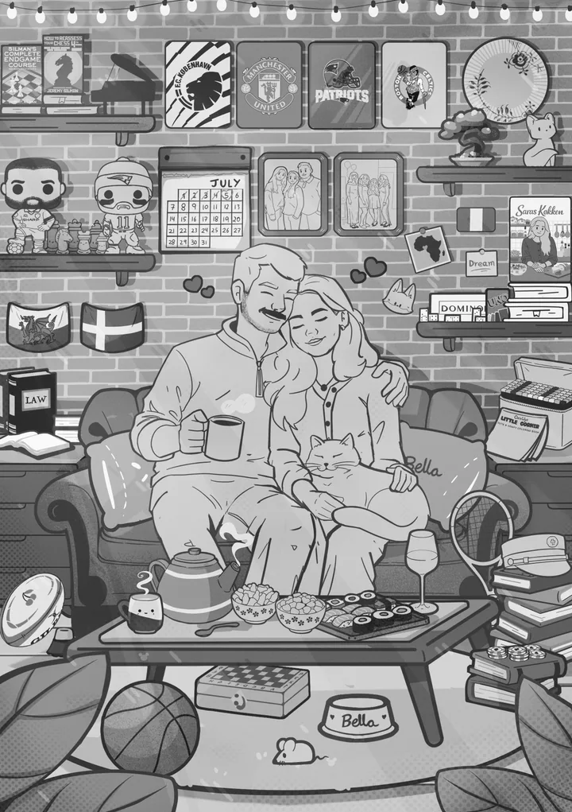
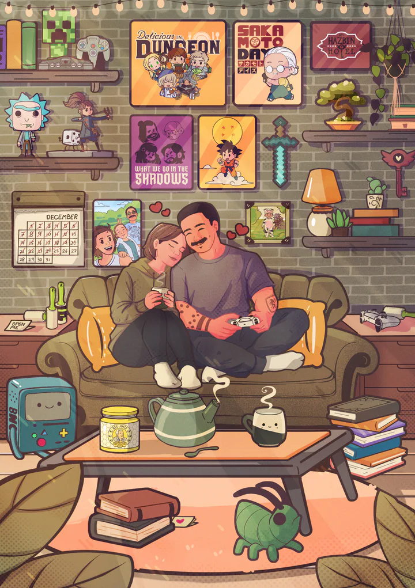
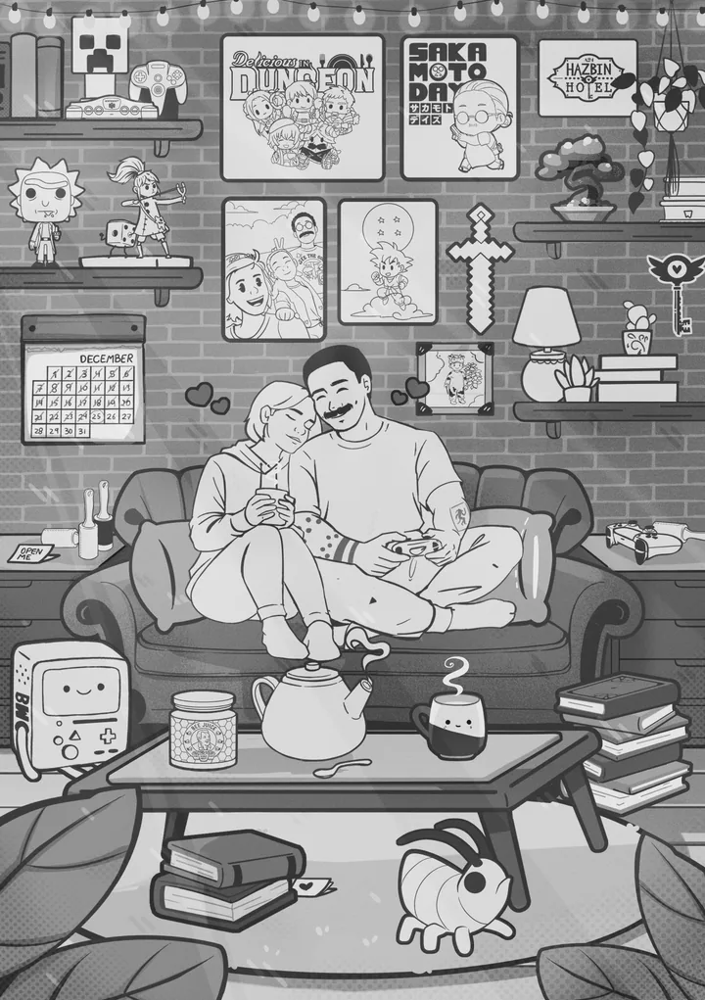
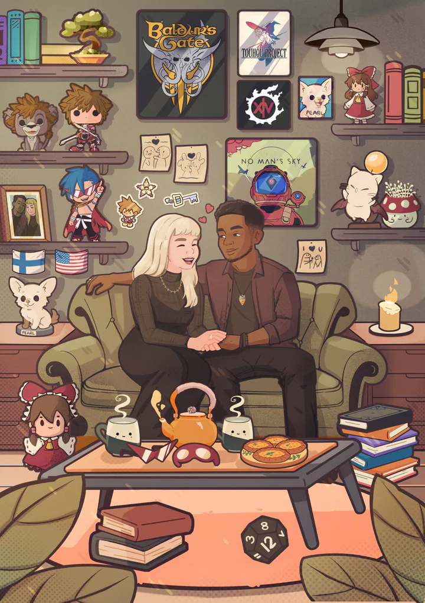
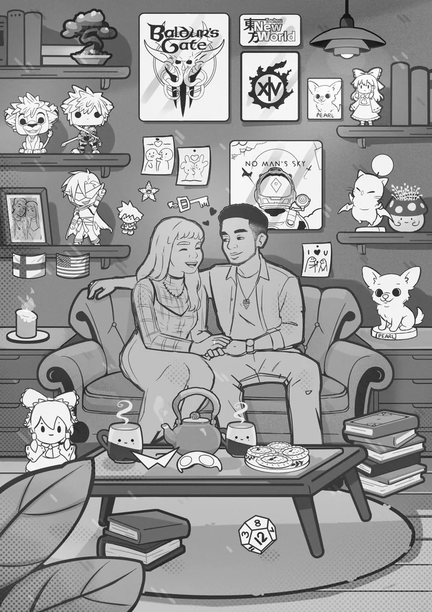
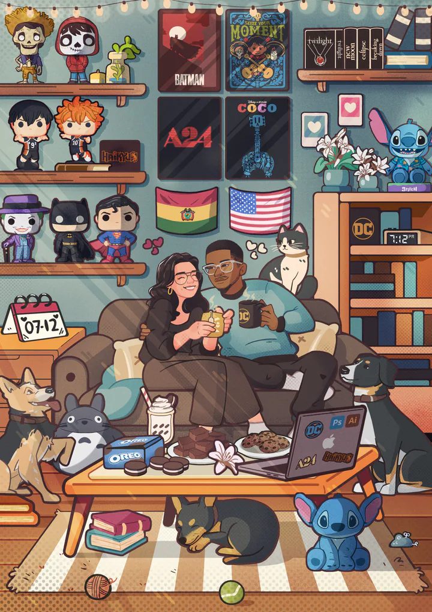
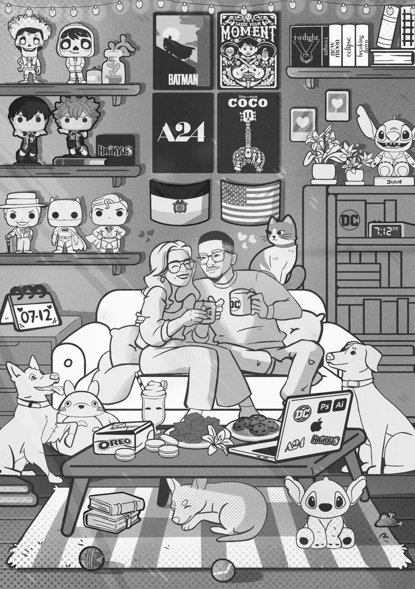
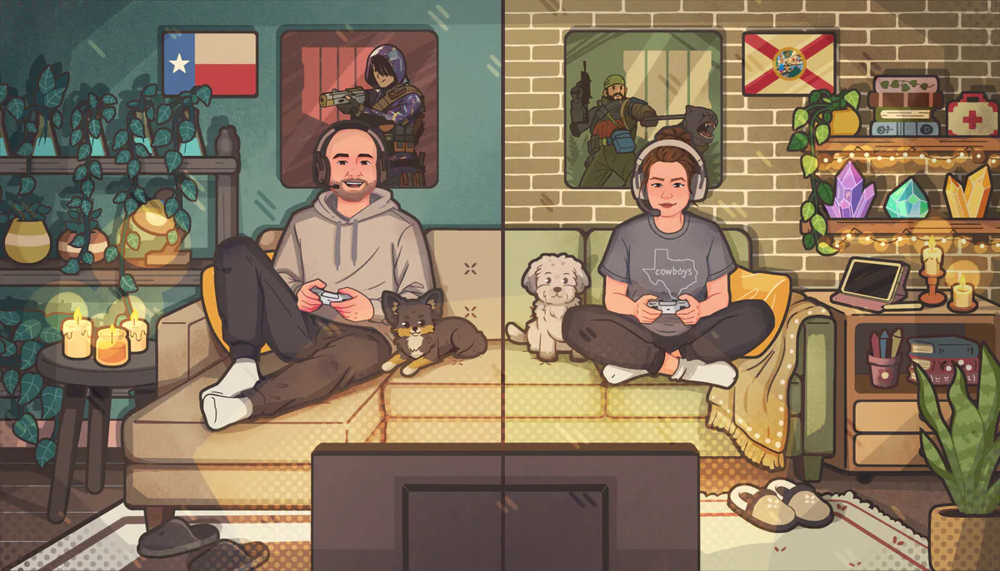
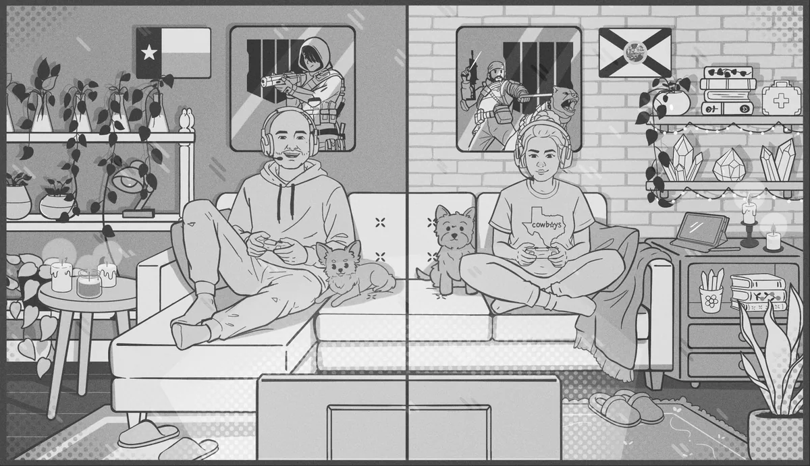
02 · Selected studies
Observation, translated.
Small scenes and personal studies explore how a photograph, a gesture or a quiet moment can become a graphic world with its own color and rhythm.
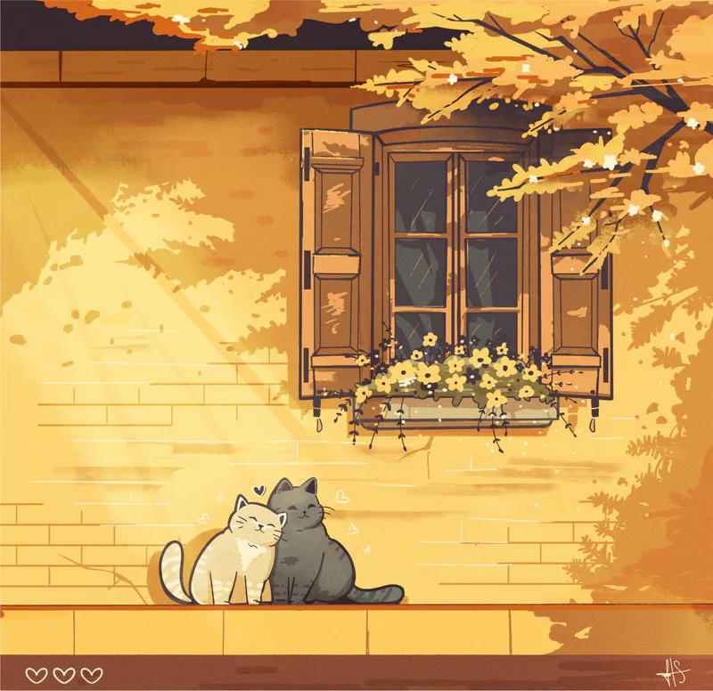
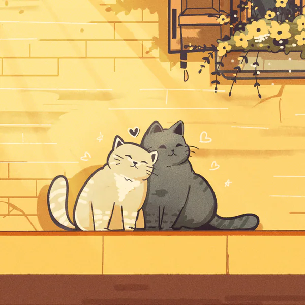
Character and atmosphere
A restrained palette, textured light and simple body language turn a small moment into a complete narrative.
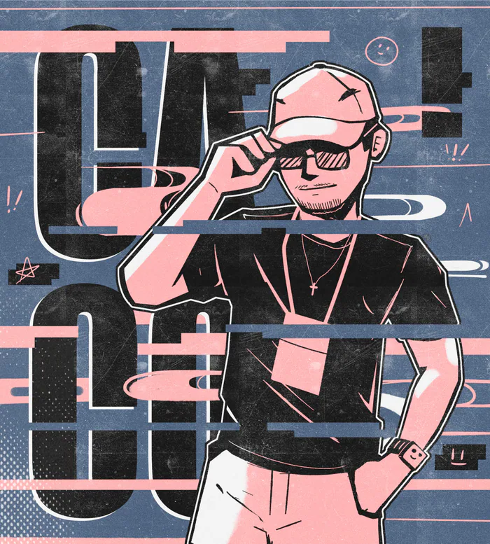
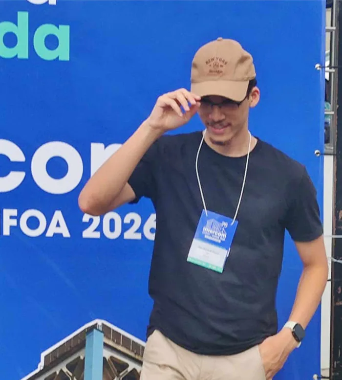